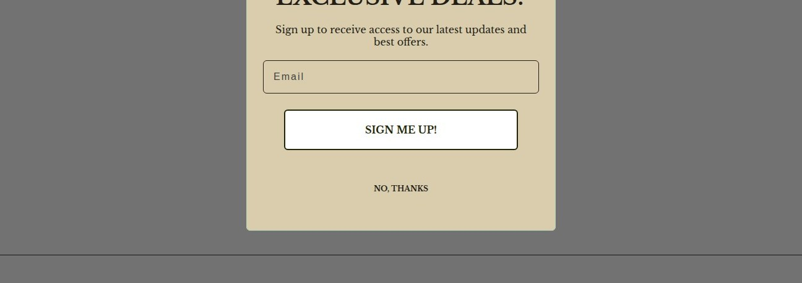
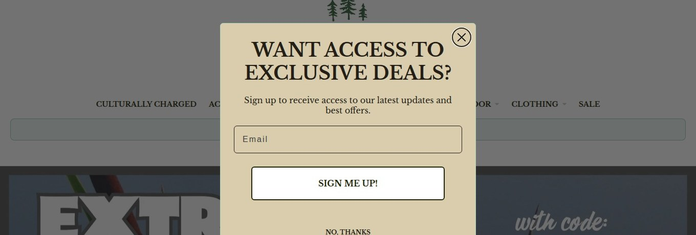

Heavy third-party script load
The homepage loads 56 scripts, which is the usual root cause of slow interaction readiness on mobile.


Homepage next step is ambiguous
The homepage presents multiple unrelated CTAs and social follow headings, leaving no clear primary direction into the purchase path.


Clarify culturally charged tagline
The tagline is followed by a sale banner and category list, but lacks plain-language explanation of the brand's point of difference.

Ambiguous Accoutrement nav label
The brand tagline 'Culturally Charged Accoutrement' runs into the category list, and a separate 'Accoutrement' category appears, confusing s

Homepage
Welcome to Our Store
Shop the latest collection of products.
Shop NowWeak page metadata
Search and social previews are degraded: page title (absent), meta description are missing or outside recommended lengths.

Conflicting cart feedback after add
The cart drawer simultaneously shows 'Item added' and 'View my cart (0)', confusing shoppers about whether their item was added.